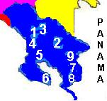
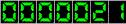

DIRECCIÓN REGIONAL BRUNCA |
|
|  | Ing.
Belfort Cubillo Jiménez, Director Ing. Rogelio Barrantes, Unidad Ejecutora Operativa San Isidro del General Tel: (506)771-3361 Fax: (506)771-7100 e-mail: rbrunca@cnp.go.cr |
| SUBREGIONES | |
| 1.PEREZ
ZELEDON San Isidro del General |
Agr. Evelio
Marín, Jefe Tel: (506)771-0513 |
| 2.BUENOS AIRES Buenos Aires |
Ing. Virgilio
Carballo, Jefe Tel: (506)730-0172 Fax: (506) 730-1182 |
| 3.PEJIBAYE El Aguila |
Ing. Juan
Sibaja, Jefe Tel/fax: (506)736-0006 |
| 4.PALMAR Palmar Norte |
Ing. Fernando
Naranjo, Jefe Tel/fax: (506) 786-6143 |
| 5.PUERTO
JIMENEZ Puerto Jiménez |
Ing. Alfredo
Quintero, Jefe Tel: (506)735-5014 Fax: (506) 735-5064 |
| 6.CORREDORES Ciudad Neilly |
Agr. José
Noguera, Jefe Tel: (506) 783-3096 Fax: (506) 783-3210 |
| 7.LAUREL Laurel de Corredores |
Ing. José
Noguera, Jefe Tel: (506) 780-0068 Fax: (506) 783-3210 |
| 8.COTO BRUS San Vito de Java |
Ing. Eliécer
Navarro, Jefe Tel: (506) 773-3362 Fax: (506) 773-3376 |
 |
Contador funcionando desde el 08 de octubre